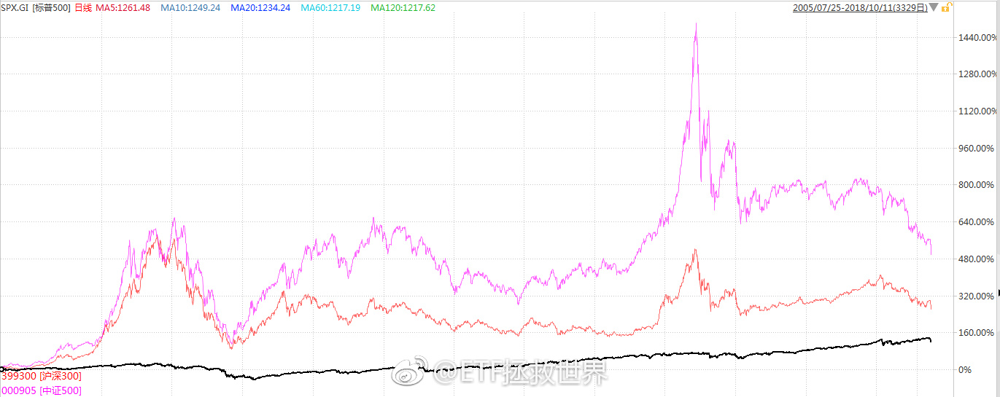

A股是辣鸡吗，美股是天堂吗。
万万没想到的是，其实……
十六年过去，美股才追上A股。
美股看起来容易赚钱是因为波动小，长牛。你什么时候进去都很容易解套。
A股波动太大，散户又容易牛市追涨，熊市杀跌，所以赔钱得多。
但你只要反过来做，牛市卖出，熊市买入，你获利的机会，以及获利的幅度，都会远超美股。
而且，长期来看，A股真的不辣鸡。
万万没想到的是，其实……
十六年过去，美股才追上A股。
美股看起来容易赚钱是因为波动小，长牛。你什么时候进去都很容易解套。
A股波动太大，散户又容易牛市追涨，熊市杀跌，所以赔钱得多。
但你只要反过来做，牛市卖出，熊市买入，你获利的机会，以及获利的幅度，都会远超美股。
而且，长期来看，A股真的不辣鸡。
- 